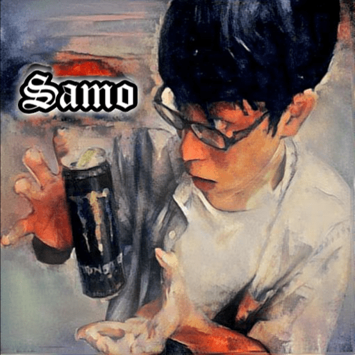

とある部屋の一角で、今日も放送が行われている....。
ある者は放送主の事をホモと呼び、
またある者は下ラジの人と呼ぶ....。
カオスで滅茶苦茶なラジオ番組です！
ホモじゃないもん....(・ω・`)

趣味でマジック、DTM、プログラミング、西洋占星術など色々やってる変態。
岩手の田舎に住んでます(・ω・`)
2017.11.26 【活動休止】約４ヶ月間番組をお休みさせて頂きます。
私の小説【キオモノシリーズ】では、主人公の悩みを解決してくれるキーキャラクターが数人存在します。
リスナーさんから投稿いただいたお悩みを、キオモノシリーズのキャラクターからランダムで一人選び。
【さも】がそのキャラクターならこう解決するよ～と言いった事をお届けするお悩み相談コーナーです。
マジックをやっていると、一つ一つの技法をどう組み合わせるか悩む事が出てきます。
そんな細かい所の能力を鍛えるべく、リスナーさんから送っていただいた単語をランダムで何個かピックアップし、それをつないで日常のワンシーンを作り上げると言った創作コーナーです。
リスナーさんから送って下さったセリフを、渾身のキメ声で読み上げる黒歴史量産コーナーです。
放送コードに引っかからない範囲ならなんでもキメ声で読み上げてしまうので、
あ～んなセリフやこ～んなセリフを投稿すると....？